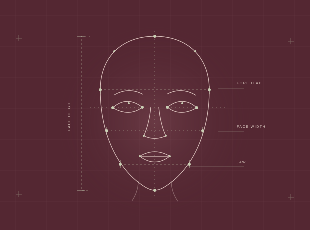

PERSONAL PROJECT
Sur Mesure
Beauty, made to measure.
Makeup isn’t one-size-fits-all. I’m exploring how facial landmarks and proportions can become a starting point for more personalized makeup guidance.

FROM FEATURES TO MEASUREMENTS
A creative question.
A technical
starting point.
Landmark detection → facial measurements → a foundation for personalized guidance.
CONCEPT ILLUSTRATION.
THIS IS NOT A LIVE ANALYSIS OR A PROTOTYPE SCREENSHOT.
- MY ROLE
- Project direction, interface iteration,
measurement testing, AI-assisted development - CURRENT FOCUS
- Facial landmarks, face and eye proportions,
and refining interpretation - PROJECT STAGE
- Experimental prototype.
Makeup recommendations are planned.
The idea behind it.
My interest in makeup led to a question: why do so many tutorials offer the same placement advice when people’s features are different?
Sur Mesure is my way of exploring that question through technology. Rather than starting with a single face-shape label, I’m looking at measurable proportions and how they might help someone experiment with makeup that suits their own features.
How the prototype works.
- 01 / INPUT
Start with a photo
Use a front-facing image as the input for landmark detection.
- 02 / DETECTION
Locate facial landmarks
Use MediaPipe Face Landmarker to identify facial points and draw them over the image.
- 03 / MEASUREMENT
Calculate proportions
Transform coordinates into face and eye measurements, ratios, and angles.
- 04 / ITERATION
Question the output
Compare the results with the image and refine measurements that don’t represent features well.
What I’ve explored so far.
- Photo upload, facial landmark detection, and landmark overlays.
- Face width and height, forehead and jaw width estimates, and relative proportions.
- Eye width, eye opening, and eye tilt measurements.
- Early face-shape interpretation and testing where its rules fall short.
Where I want to take it.
- Improve forehead and jaw measurements and test them across different images.
- Refine how proportions are interpreted without over-relying on broad shape labels.
- Develop personalized blush, bronzer, contour, and eye makeup placement guidance.
- Explore visual overlays and options for everyday or more dramatic makeup.
The most useful finding
so far? Question the label.
In one test, the prototype suggested round or soft oval proportions when I expected a heart-shaped result. Looking at the overlay showed that the forehead measurement didn’t reach the full width of the forehead.
That exposed a useful limitation: a classification can look reasonable while depending on a measurement that needs work. I’m using that feedback to revisit landmark selection and the rules built on top of it.
What I’m contributing
and learning.
I chose the problem, shaped the project’s direction and user experience, tested the measurements, and identified changes through hands-on use. I use AI-assisted development to help build and iterate on the code while developing my understanding of the logic behind it.
The project is helping me connect JavaScript, coordinate systems, ratios, interface design, and testing. My goal is to be able to explain not only what the prototype returns, but why it returns it and where it needs improvement.